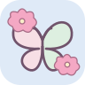

Oi, Bia! ♡
O que você quer dizer?
Uma escolha de cada vez, no seu tempo.

Talvez você queira...Sugestões baseadas em escolhas anteriores. Você decide.
🌸 Talvez você queira...
🧠 Mais formas de comunicar
🔥 Mais usados
Limpar destaque📂 Categorias
Ver todas →💬 Frases rápidas
🔣 Símbolos
Mostrar todosSelecione símbolos para ver sugestões da IA
🧠 Cérebro de Contexto
Observando✨ Você pode estar querendo dizer...
AprendendoUse alguns símbolos para a Jornada de Bia aprender suas combinações.
📊 Estatísticas
📜 Histórico
Nenhuma mensagem salva ainda
🌸 MODO CALMO
Escolha uma mensagem. A tela reduz estímulos e mantém apenas o essencial.
✏️ Editar Símbolos
Gerencie os símbolos disponíveis para comunicação.
📜 Todas as Mensagens
Nenhuma mensagem salva ainda
👨👩👧 Responsáveis
Gerencie os contatos dos responsáveis para comunicação rápida.
🏥 Informações Médicas
Gerencie as informações de saúde para emergências e cuidados.
📅 Minha Rotina
Um passo de cada vez, no meu tempo.
Para adicionar, excluir ou mudar a ordem, desbloqueie a administração nas Configurações.
🎵 Música e Atividades
Explorar, desenhar e brincar sem pressa.
Meu desenho
Desenhe com o dedo ou mouse. Seu desenho não é enviado para nenhum servidor.
Encontre os pares
Toque em duas figuras iguais. Sem cronômetro e sem pontuação negativa.
Sons suaves
Sons sintéticos simples, produzidos no aparelho após seu toque. Ajuste o volume ou pare a qualquer momento.
Nenhum som em reprodução.
🌸 Jardim Musical Sakura
Toque em uma flor, borboleta ou estrela para ouvir uma nota suave. Nenhum som começa sozinho.
Jardim silencioso.
🔶 Formas e Cores
Observe a figura e escolha a opção igual. Sem tempo limite ou penalização.
🦋 Assistente Inteligente
Random Forest + rede neural experimental. Sugestões não representam necessidades confirmadas. Você sempre escolhe o que comunicar.
Random Forest e rede neural local estão em observação: calculam resultados para comparação, sem substituir as frases apresentadas. A Neural API dos cartões é um componente separado.
Aguardando dados locais suficientes.
Avaliação manual do Random Forest
Para testes feitos por você, separados do uso da Bia. As previsões são calculadas antes da escolha e reveladas depois. O teste não treina os modelos nem muda a ordem das frases.
Tipo de comunicação: frase personalizada, sem sequência de símbolos.
Desbloqueie a administração, escolha um contexto e inicie. Depois, toque no botão de falar de uma frase personalizada.
Acerto significa apenas coincidir com a escolha seguinte, não confirmar uma necessidade. A comparação usa os mesmos testes para ambos os métodos; falta de dados é mostrada separadamente. Até 200 resultados ficam guardados só neste navegador. Recarregar cancela um teste pendente.
Os modelos funcionam localmente, sem enviar histórico a serviços externos. A comunicação continua disponível sem IA.
⚙️ Configurações
Personalize a experiência e acesse as áreas de apoio.
🌸 Sakura Zen — Aparência
Escolha rosa ou azul, com modo claro ou escuro. Para evitar mudanças acidentais, estes controles ficam fora da tela de comunicação.
♿ Acessibilidade e personalização
Desbloqueie a administração para modificar estas opções. Preferências salvas apenas neste aparelho.
Modelo experimental dos cartões
O modelo usa dados fictícios; sua ordem não representa preferências reais. Ao abrir Meus cartões, a ordenação local é atualizada. Não há treinamento com os cliques.
Por padrão, as sugestões são calculadas neste aparelho, sem enviar contexto à API. Desbloqueie a administração para mudar. No modo API externa, ao solicitar sugestões, enviamos somente o período do dia e o último cartão deste painel escolhido nesta sessão. Sem nome ou histórico de frases.
👁️ Visão, movimento e estímulos
Estas preferências podem ser ajustadas sem desbloquear a administração. São salvas somente neste aparelho.
Configure primeiro o PIN administrativo. A biometria usa o autenticador do aparelho quando disponível; o PIN continua como alternativa.
ETAPA DE TESTE: esta prova de conceito usa WebAuthn local no navegador, mas ainda não tem validação por servidor. Não a use como única proteção de dados sensíveis. Publique apenas em HTTPS; a Jornada de Bia não recebe nem armazena sua impressão digital ou rosto.
Guarde símbolos, responsáveis, histórico, preferências e aprendizado local.
🌸 Sugestões de atividades por horário
O aplicativo pode sugerir atividades escolhidas em pelo menos três dias diferentes perto do mesmo horário. Os registros ficam neste navegador. Não são previsões de necessidades.
Notificações no dispositivo (teste)
Notificações automáticas com o aplicativo fechado exigem configuração futura de push e HTTPS. A permissão não ativa envios automáticos.
O aprendizado acontece localmente no aparelho. A Jornada de Bia observa padrões de uso para melhorar sugestões.
🌻∞ Sobre a Jornada de Bia
A Jornada de Bia é um aplicativo de comunicação acessível que utiliza Inteligência Artificial para ajudar pessoas com dificuldades de comunicação.
🧠 Como funciona:
- 📌 Toque nos símbolos para formar mensagens
- 🤖 A IA aprende seus padrões de comunicação
- 💡 Receba sugestões inteligentes em tempo real
- 🔊 Ouça as mensagens em voz alta
- 💬 Envie mensagens via WhatsApp para os responsáveis
- ✏️ O responsável pode editar e adicionar novos símbolos
🌻∞ "Comunicação é amor, e o amor é infinito."
👨💻 Desenvolvedor: Rafael Ricardo Mayer
📧 rafael10mayer@gmail.com
📱 v29.0.0 - Modo sensorial personalizado